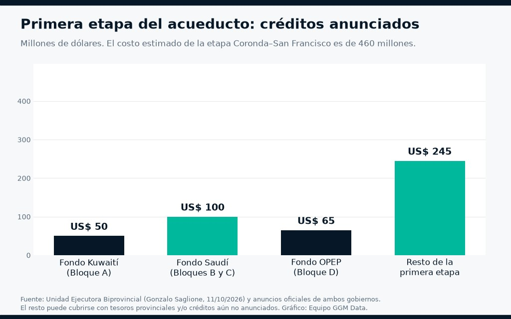

Córdoba · Política
Agua del Paraná: el acueducto ya avanza hacia San Francisco, pero la ciudad de Córdoba queda para una segunda etapa sin fecha
En octubre de 2026 el Bloque A tenía un 25% de avance, según el Gobierno de Santa Fe. La primera etapa, estimada en 460 millones de dólares, busca abastecer a más de 410.000 habitantes de unas 54 localidades. Llevar el agua hasta la Capital es otra obra, que todavía no se licitó ni tiene un presupuesto oficial publicado.
 Foto: Prensa Gobierno de Santa Fe")
Cuando se habla de "traer agua del Paraná a Córdoba", mucha gente piensa en la Capital. Lo que hoy se construye es otra cosa: un acueducto que nace en Coronda, sobre un brazo del sistema del Paraná, y que en su primera etapa debe llegar a San Francisco y empalmar ahí con la red del noreste cordobés. La ciudad de Córdoba, que se abastece del dique San Roque y del dique Los Molinos, quedó para una segunda etapa, que no está en obra.
El 11 de octubre de 2026, el Ministerio de Obras Públicas de Santa Fe informó que el Bloque A —toma, planta potabilizadora, primera estación de bombeo y tramo inicial de cañería— registraba un 25% de avance, el mismo porcentaje de fines de junio, cuando se habían colocado 3.800 metros de cañería troncal de agua tratada y 800 metros de agua cruda, de 1.700 milímetros de diámetro. El ministro Lisandro Enrico dijo entonces que se empezaba a levantar la estructura de hormigón de la planta y que estaba por concluirse el cruce bajo la Autopista Rosario-Santa Fe.
Qué es la obra
El Acueducto Interprovincial Santa Fe-Córdoba lo ejecuta una Unidad Ejecutora Biprovincial. Las dos provincias se comprometieron a pagarlo por partes iguales. La primera etapa contempla una toma sobre el río Coronda, una planta potabilizadora, unos 144 kilómetros de cañería troncal, unos 345 kilómetros de ramales y seis estaciones de bombeo, para más de 410.000 habitantes de unas 54 localidades (los anuncios más reiterados hablan de 33 en Santa Fe y 21 en Córdoba; comunicados de 2026 mencionan 32 y 22). En el este cordobés aparecen San Francisco, Morteros, Brinkmann, Freyre, Las Varillas y Laspiur, entre otras. Al firmar el contrato del Bloque A, en octubre de 2023, Juan Schiaretti dijo que "hacia el este de los cerros el suelo está lleno de arsénico y no es fácil de conseguir agua para potabilizar".
La segunda etapa, por la ruta nacional 19, es la que llevaría el agua hasta la Capital. El convenio ratificado en 2021 por la Legislatura habla de un sistema completo para 83 localidades y 1.204.000 habitantes, 960.000 de ellos en Córdoba. No se halló un llamado a licitación ni un presupuesto oficial vigente para esa etapa.
Quince años de anuncios
El primer acuerdo para elaborar el proyecto lo firmaron Schiaretti y Hermes Binner el 10 de noviembre de 2011. Entonces se habló de casi 400 kilómetros, un caudal de 4 metros cúbicos por segundo (3 para la Capital), 11 estaciones de bombeo, un desnivel de unos 430 metros y un costo de unos 800 millones de dólares. No se halló un caudal de diseño actualizado para la obra en construcción. En 2018, Schiaretti y Miguel Lifschitz firmaron un convenio en dos etapas, ya estimado en 460 millones de dólares; el esquema licitatorio debía estar listo el 28 de febrero de 2019, fecha que pasó sin que la obra arrancara. En 2021, la Legislatura ratificó el convenio de financiamiento de los ministros Fabián López y Silvina Frana y fijó la primera etapa en 441 millones. En abril de 2022, Córdoba anunció 50 millones de dólares del Fondo Kuwaití para el primer bloque.
El 5 de octubre de 2023, en Coronda, Omar Perotti y Schiaretti, con los electos Maximiliano Pullaro y Martín Llaryora, firmaron el contrato del Bloque A, adjudicado a una unión transitoria integrada por Gezhouba Group Company Ltd. Sucursal Argentina, Eco Sur Bahía Blanca y Acueducto Santa Fe Córdoba, por 17.324 millones de pesos y 720 días de plazo. Las obras físicas comenzaron en abril de 2024, según El Litoral. El 19 de febrero de 2026, Pullaro y la vicegobernadora Myrian Prunotto encabezaron la apertura de sobres de los bloques B y C, con un presupuesto oficial de 165.700 millones de pesos (base enero 2025). Se presentaron diez ofertas. Hasta los comunicados de junio y octubre de 2026 no se halló una adjudicación pública de esos tramos.
Cuánto cuesta y quién lo paga
En octubre de 2026, Gonzalo Saglione, vocal de la Unidad Ejecutora Biprovincial, habló de un "proyecto integral de US$ 460 millones". Hay créditos internacionales anunciados por 215 millones: 50 millones del Fondo Kuwaití para el Bloque A (3% anual, 20 años, 4 de gracia), 100 millones del Fondo Saudí para los bloques B y C, y 65 millones del Fondo OPEP para el Desarrollo Internacional (OFID) para el Bloque D, aprobados en septiembre de 2026, a 20 años con 5 de gracia y una tasa de SOFR más 2,30 puntos (6,27% al aprobarse), asumidos por mitades. Los préstamos tienen garantía del Estado nacional. Ambas provincias también aportan partidas de sus tesoros.
La primera etapa está dividida en ocho bloques: para los cuatro restantes no se halló, a noviembre de 2026, un crédito internacional anunciado. En febrero de 2025, Comercio y Justicia informó que Llaryora y el ministro Guillermo Acosta gestionaban en Medio Oriente el fondeo que faltaba, y que el costo en dólares se había encarecido. No hay presupuesto oficial actualizado para la segunda etapa. Ese medio estimó en 2023 que "sería cuando menos similar" a los 440 millones de la primera; es una hipótesis periodística, no una cifra oficial.

Por qué se plantea, y cómo están hoy los diques
El argumento no es una sequía de esta semana. Es el abastecimiento de mediano y largo plazo: pueblos del este con agua subterránea de mala calidad, localidades santafesinas con cortes o baja presión, y una Capital que depende de dos embalses serranos.
En 2025, según el Reporte de Sustentabilidad de Aguas Cordobesas, la dotación promedio anual de producción fue de 360 litros por habitante y por día. El 73% del agua de la ciudad sale de la planta Suquía, alimentada por el San Roque; el 27%, de la planta Los Molinos. La empresa usa carbón activado para tratar olores y sabores anómalos. Los reclamos por falta de agua o baja presión pasaron de 16.988 en 2024 a 24.784 en 2025; el dato mide el servicio de la red, no solo los diques. El informe del Instituto Nacional del Agua del 4 de septiembre de 2026 registró en el San Roque coloración verde y "leve presencia" de cianobacterias, sin floración visible a campo, y 4 días con floraciones satelitales en agosto.
Hoy los diques no están bajos. El 9 de marzo de 2026, la Administración Provincial de Recursos Hídricos (APRHI) informó que el San Roque vertía 1,14 metros por encima de la cota y que Los Molinos se mantenía entre 70 y 80 centímetros por encima del vertedero. El 13 de noviembre abrió una válvula del San Roque ante el pronóstico de lluvias. Al 22 de noviembre, según las lecturas diarias de la APRHI que sistematiza diquesdecordoba.com, el San Roque estaba en la cota 33,98 metros, a 1,32 metros del vertedero, y Los Molinos en 50,15 metros, a 2,85 metros. Ambos estaban más altos que un año atrás. El Paraná, entre 2020 y 2022, registró una de las bajantes más severas en medio siglo, según el INA.
Las dudas que rodean al proyecto
El 14 de abril de 2025, el Foro Ambiental Córdoba, que preside el biólogo Federico Kopta, pidió una Evaluación de Impacto Ambiental y audiencias públicas. En Perfil Córdoba, en noviembre de 2025, Kopta advirtió que el Paraná recibe agroquímicos y efluentes de la hidrovía, y que "su agua podría no ser la más adecuada para el consumo humano". El pedido no había tenido entonces respuesta formal del Ministerio de Ambiente y Economía Circular; no se halló una respuesta pública posterior. El Foro cita un trabajo de Rafael Lajmanovich (UNL) que midió 5.002 microgramos de glifosato por kilo de sedimento en arroyos afluentes, río arriba de la toma. Aguas Santafesinas informó en 2024 un valor de glifosato "<50 µg/L", por debajo del límite de detección. Perfil Córdoba señaló que la planta de Coronda prevé coagulación, decantación, filtración y cloración, sin información pública sobre un tratamiento adicional para agroquímicos.
Kopta ha llamado "carísima" la idea de llevar el agua hasta la Capital, por la energía de bombeo y las emisiones. El ingeniero Gonzalo Moya, de la UNC, consideró útil la primera etapa, pero entendió que para la segunda deberían analizarse otros recursos. Un estudio de 2012 de la Fundación Benito Roggio propuso priorizar aportes del río Los Molinos y del río Tercero. El geólogo Ricardo Astini (CONICET-UNC) no niega la factibilidad del acueducto, pero plantea primero optimizar embalses serranos, interconectar presas y sanear el San Roque. No se encontró un cálculo oficial sobre el costo de bombear el agua ni sobre el impacto en las tarifas.
Qué le toca a cada uno
- Provincias de Córdoba y Santa Fe: firmaron el convenio, se comprometen a financiar la obra al 50% y la ejecutan a través de la Unidad Ejecutora Biprovincial. Aportan créditos internacionales y partidas de sus tesoros.
- Nación: es la garante de los préstamos de los fondos árabes y de la OPEP. No se halló, en esta etapa, una partida nacional de obra que sustituya ese rol.
- Municipalidad de Córdoba: no es parte de la primera etapa, que no llega a la Capital. En la ciudad, la red la opera Aguas Cordobesas, con agua de San Roque y Los Molinos.
- Prestadoras: Aguas Cordobesas abastece a la Capital; Aguas Santafesinas ya trata agua del Paraná en su provincia. Las cooperativas y sistemas locales del este cordobés y del centro-oeste santafesino serían, en la primera etapa, los destinatarios del nuevo caudal.
- APRHI: es la autoridad provincial del agua en Córdoba, publicó el aviso de proyecto y opera los diques de los que hoy depende la Capital.
Preguntas que siguen abiertas
- ¿Cuándo llegará agua potable a San Francisco, si el Bloque A lleva un 25% de avance y no se halló la adjudicación pública de los bloques B y C?
- ¿Con qué créditos o partidas se cubrirá el resto de los 460 millones de dólares de la primera etapa?
- ¿Cuál es el caudal de diseño actual de la obra y el costo oficial de la segunda etapa, hasta la ciudad de Córdoba?
- ¿Hubo Evaluación de Impacto Ambiental y audiencias públicas, y la planta de Coronda incluirá tratamiento específico para agroquímicos?
- ¿Cuánto costará bombear el agua y cómo impactará en las tarifas?
Fuente
Gobierno de Santa Fe (comunicados del 27/06/2026 y 11/10/2026 · licitación pública internacional N° 01/2025 · Boletín Oficial, 17/11/2025) · Gobierno de Córdoba (anuncio del crédito kuwaití, 06/04/2022 · prensa del 19/02/2026) · Legislatura de Córdoba (convenio ratificado el 30/12/2021 y debate del 22/12/2021) · Unidad Ejecutora Biprovincial (declaraciones de Gonzalo Saglione y Paula Nardín) · Fondo Kuwaití para el Desarrollo Económico Árabe · Fondo Saudí para el Desarrollo · Fondo OPEP para el Desarrollo Internacional · Administración Provincial de Recursos Hídricos (09/03/2026 y 13/11/2026 · lecturas diarias vía diquesdecordoba.com, 22/11/2026) · Instituto Nacional del Agua (informe mensual del embalse San Roque N°360, 04/09/2026) · Aguas Cordobesas, Reporte de Sustentabilidad 2025 · Aguas Santafesinas (informe 2024, citado por Perfil Córdoba) · La Voz del Interior (10/11/2011 y 23/10/2018) · Región Centro (24/10/2018) · El Litoral (05/10/2023 y abril de 2024) · Cadena 3 (27/06/2026) · Comercio y Justicia (30/01/2023 y 17/02/2025) · Perfil Córdoba (15/11/2025) · Foro Ambiental Córdoba · Universidad Nacional del Litoral · Universidad Nacional de Córdoba y CONICET · Elaboración: InfoDataGGM